These were GIFs to showcase featured artists for the biggest events on-campus at University of California - San Diego, including Hullabaloo and (mostly) Sun God Festival.
Overview
Within my position as a videographer at Associated Students Concerts and Events (AS Concerts and Events or ASCE in short),
I also developed a few creative GIFs, which were used for larger-scale events that demanded social media
engagement from the marketing team. These also marked my first attempts in making GIFs in general. With the help of
Premiere Pro and GIF converting websites, I was able to quickly produce them. With each successive GIF, I grew more
comfortable in exploring different visual effects to succinctly show crucial aspects of each of the events.
GIF for Hullabaloo Event
Hullabaloo is one of the bigger student-led events on campus with an emphasis on a large night concert venue, carnival rides,
and other night festivities. It was relatively simple to make given there was only three artists, artist text, a tagline,
some stock footage, and the Hullabaloo logo needed to showcase. The words that make up the tagline, “One Day Left”, was a
call to action for people to be aware of Hullabaloo coming up in one day away.
Tinting Pictures to the Hullabaloo Brand
Since the GIF wasn't going to be that long, I decided to select a few pictures that either showcased the artists or best
represented the event. I color corrected, graded, and tinted the photos within Premiere Pro.
Comparison of the color graded photos used in the Hullabaloo GIF.
Visual Effects
At the time, I was not too familiar with creating GIFs, so I decided to make its message simple, with a strong prompt to action
for people to attend the event. I used zoom-in and crossfade effects as smooth, yet dynamic transitions to the next portion of the GIF.
Zoom-in of artist names and words that would prompt viewer's attention to Hullabaloo.
Final Design
GIF for Sun God Festival 2018 Artist Lineup
Sun God Festival is the biggest all-campus event of the academic year for students, with roughly over 12,000 students
attending the event. Students are generally the most receptive to the artist lineup reveal since they are often informed
by other campuses having artists that are just as well known. I was able to dive deeper into Photoshop and animated stock
footage to make the lineup reveal consistent with the event branding.
For clarification, these artists were only the first part of the lineup (dubbed "Wave 1 lineup") revealed as the first of a two part campaign for AS Concerts and Events to reveal the artists. This fact is shown through the graphic banner.
Tinting Pictures to Sun God Festival Branding
This approach was similar to the tinting of the artists photos for Hullabaloo, but with an emphasis for greater contrast
between the shadows and the highlights.
Comparison of the color graded photos used to represent the main artists for the Sun God Festival Lineup.
For this GIF, it wasn't necessary to reinvent the wheel for the brand and visual design that the original creators intended on the banner.
Rather, by keeping the GIF consistent with the color scheme and words derived from the event banner, it was easier and simpler to establish
the correlation between the featured artists and the event.
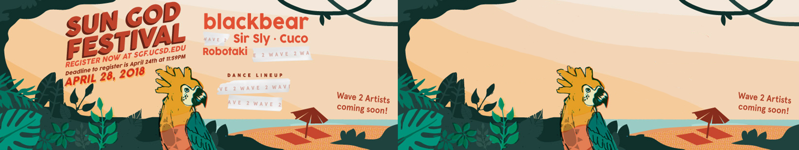
I used the Sun God Festival graphic banner and used Photoshop to extract the banner text such that only the background remained. This enabled me to creatively manipulate the text and background.Text and logos used for the GIF derived from the banner to convey the message for people to register for the event.
Visual Effects
To polish up on tying the artist photos and the event banner together, I used stock footage of light flares as a way to transition from one artist to the next and into the event banner.
To emphasize the aspect of the brighter colors in the event banner and the overall theme of Sun God Festival, I added stock footage of light rays over the event banner.
Final Design
The GIF ended up with less frames per second with a lower resolution, but it was necessary to be able to upload the GIF with a sufficient file size so that it could be presented on a Facebook post as an actual GIF.
GIF for SGF Battle of the Bands
The next GIF covered all of the student contestants and bands that seek to perform as the opener for Sun God Festival,
which was the biggest spring event for students on campus. It was overwhelming to witness the result of 23 participants,
each with their own names and photos, to be zooming in to the viewer, all within the total span of 18 seconds, but it
was made similarly to the first GIF in an attempt for people to quickly get the gist of who was participating in the
Battle of the Bands.
Graphic of the Battle of the Bands event used.
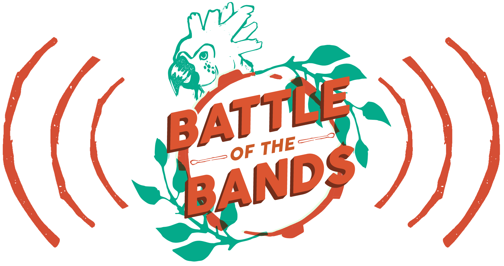
All 23 photos of the main artists and bands for the event.
Final Design
The GIF's visual effects were identical to that of the Hullabaloo GIF where it used quick zoom-in transitions to show
one artist after the next. The call-to-action text was included to prompt the person to participate through voting
before the March 14th midnight deadline.
GIFs for Sun God Festival 2019 Artist Lineup
This was the most ambitious set of GIFs that I have created, because that were a part of the Sun God Festival's social media
campaign that the marketing team in ASCE wanted to heavily push. With a combination of approved artist photos, discovered
text of their name logos, a Super 8 film look, Sun God Festival graphics, and layered stock footage (dust, fog, and light
effects), I was able to execute a total of 6 GIFs, one for the lineup reveal, and 5 for each of the artists.
All of the approved artist photos and original artist texts used for the GIFs.
Visual Effects
I employed a combination of color correction and grading, multiple layers of stock footage, and camera movement animations to achieve the desired look of
gradually revealing each artist. Dust, smoke, light rays, film burns, and a bit of artifical film grain helped to achieve a more traditional
filmic appearance while putting the emphasis on the artist and the text itself with respect to the theme of Sun God Festival.
Video clips shown to show the progression of adding layers of effects and grading to the artist photo.
Final Designs
With the use of the Sun God Festival bird logo, relevant text of the event date and website, and a video clip of the ocean used on marketing graphics of the event,
I was able to produce one GIF of the entire artist lineup reveal as well as five individual artist GIFs.
Lineup Reveal
Hunny
Whipped Cream
Hayley Kiyoko
Joji
Vince Staples
Results of GIFs
All of these GIFs were released as Facebook posts under their respective event pages.
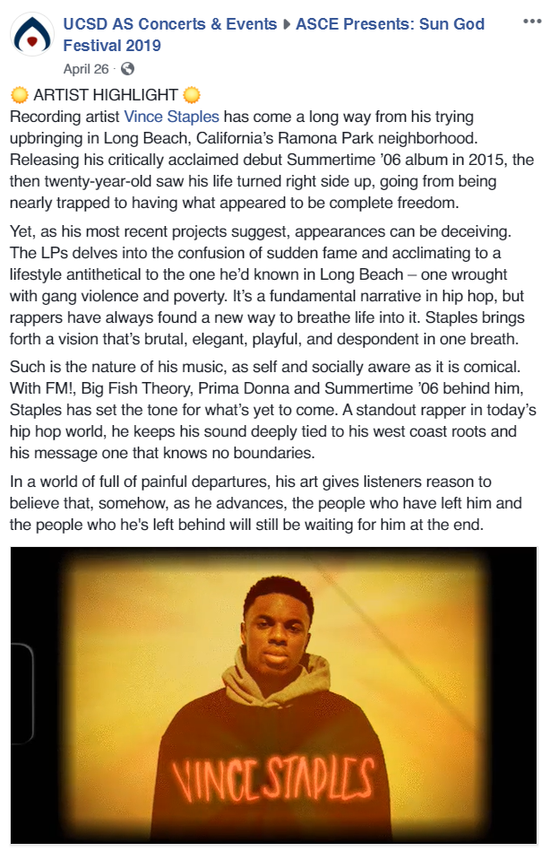
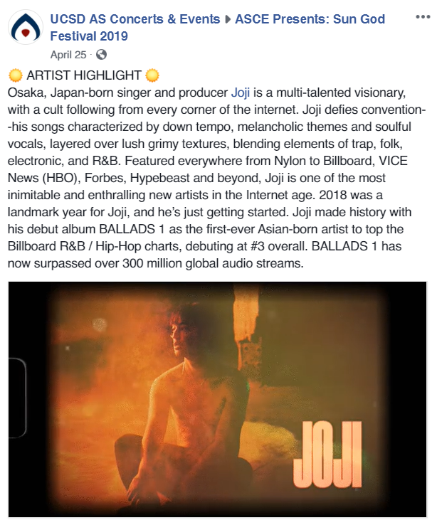
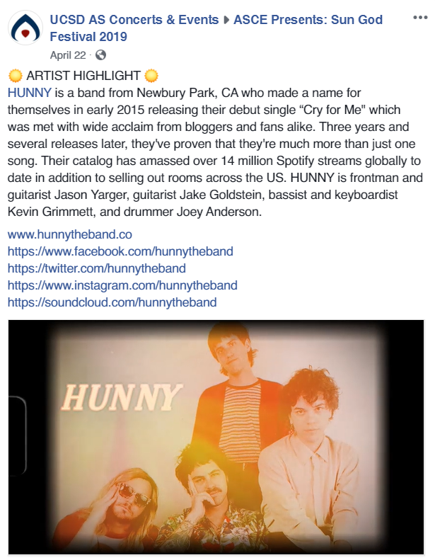
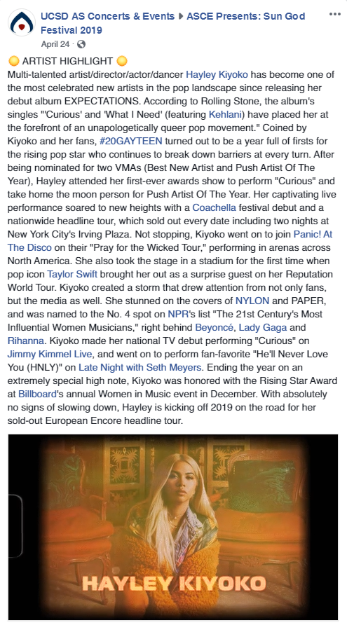
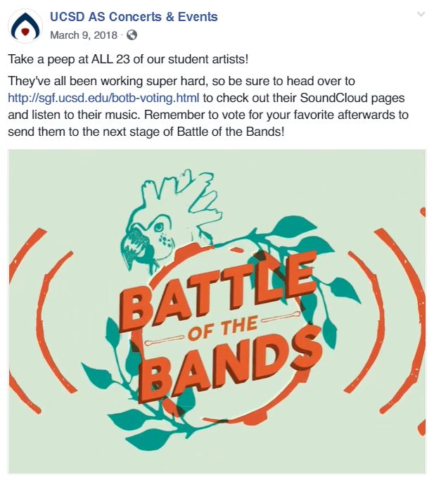
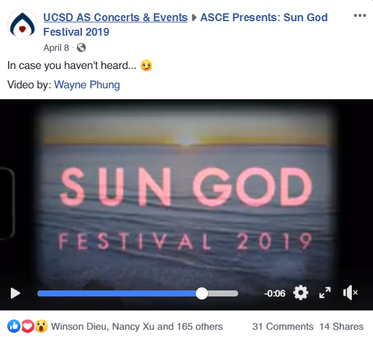
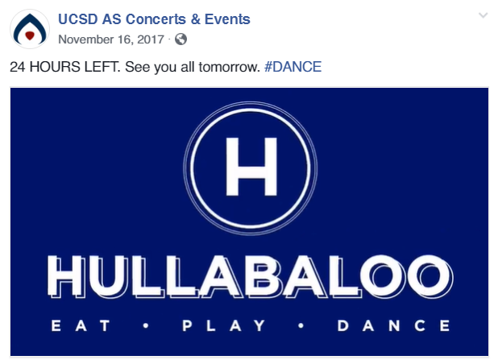
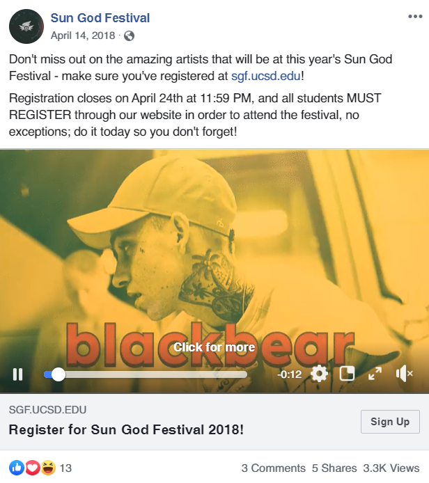
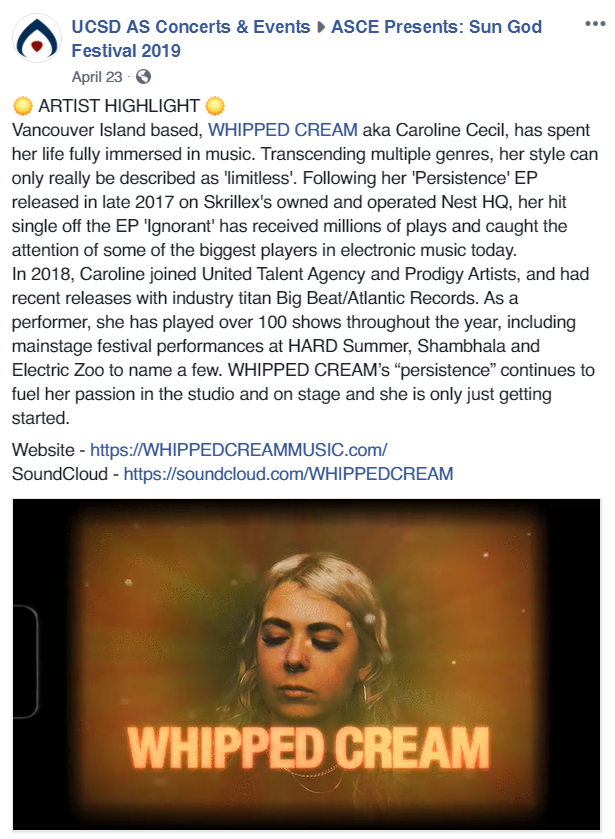
Reflection
My prior experiences with video post-production as well as my skills in Premiere Pro, typeface and stock footage finding, and image manipulation to
create these GIFs made me realize how I came quite a long way from not knowing anything about GIFs to being able to understand how different of an
approach and narrative that GIFs have in showing rich storytelling compared to videos. The process was quite fun, as the bit-sized GIFs didn't seem to
take that long to execute, yet I understood the value of a shorter, simpler, more meaningful message that comes from GIFs. I would love to be able to
continue making GIFs for people that are much better caliber than where they currently are now.